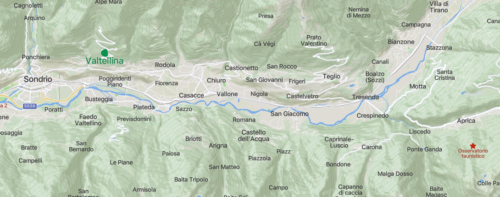

Valtellina é um vale na região da Itália da Lombardia, no nordeste italiano, na fronteira com a Suíça, ou seja, na Itália, onde o fundador da Pizzaria nasceu.
Atualmente, é conhecida como uma região de resorts para a prática de esqui, de spas termais e por seus queijos, principalmente o bitto, e seus vinhos. Nos séculos passados, foi uma passagem estratégica entre o norte da Itália e a Alemanha, sendo muito visada principalmente durante a Guerra dos Trinta Anos.